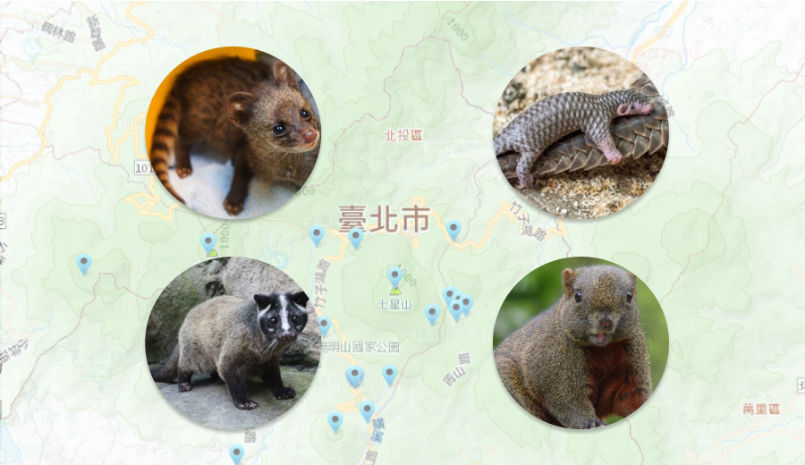

陽明山國家公園蘊含豐富的自然生態，負有保育北臺灣中低海拔自然環境的重任。但由於數量龐大的遊蕩犬族群，已對園區內的自然生態與公共衛生造成負面影響，尤其對野生動物更是產生嚴重的負面衝擊(Vanak and Gompper 2009)，其影響方式包括直接獵捕、競爭資源、傳播疾病、雜交…等(Yamaguchi et al. 2004; Silva-Rodríguez and Sieving 2012; Soto and Palomares 2015)。 
遊蕩犬大多會集結成群並且結成狗群後狩獵能力會大幅上升，據環境資訊中心表示，連體型比牠們大得多的梅花鹿都獵捕得到。根據109-110年度陽明山國家公園流浪動物族群現況調查報告，自由活動犬隻是麝香貓族群之潛在威脅，且2012-2014年間記錄到3筆麝香貓疑似受犬隻攻擊致死的案例。
>